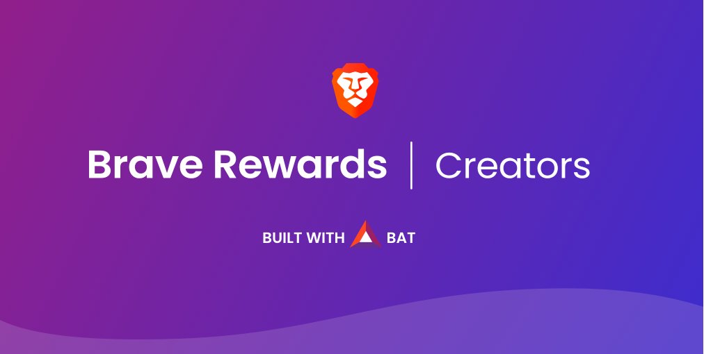

New search engine Brave Nightly offers a new browser with a reward system for content creators.
You can download Brave Nightly and learn more about here.
As a Github user and a big fan of Brave, how Github Creators can be easily
rewarded by users?
Follow this tutorial!
Github Pages allow anyone to create a repository hosted on Github for free.
Create you own Github Pages here.
Alrighty, you have made your own Github Pages!
You can access it via
https://{USER_NAME}.github.com.
Voila, what a beautiful blank page!
Get creative now and feel free to design your own canvas :)
Go to Brave Creators.
You are now logged and on the dashboard page.
Brave support multiple channels as classic domain name, twitch channel, youtube channel and many more.
Enter you Github domain name '{USER_NAME}.github.com' and click Download a trusted file.
First create a directory called '.well-known' in the root of Github Pages directory. CMD Hint: mkdir .well-known ;)
Put the verification file in '.well-known' folder.
Do not change the verification file name 'brave-payments-verification.txt' or the file content.
Verification can take one or two days, so be patient.
As you account is verified, a new 'verified' logo appear on you brave page status.
Like this tutorial? You can tip me with brave on this page B-) Thanks!